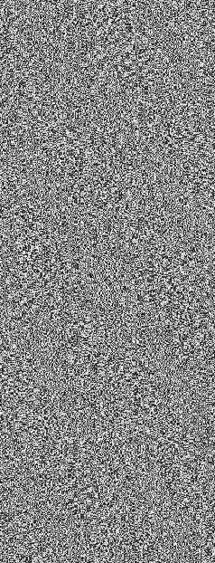

下記する大怪盗【 ニーズヘッグ 】の模倣犯、又は「遺志を継ぐ者」たち。
イメージワードは【 盗賊 】。
怪盗義賊【 ニーズヘッグ 】は賛否両論を巻き起こしながらも社会を騒がせ続け、故にその死亡が報じられた時は世間に波紋が広がった。
喜ぶ者、悲しむ者。中にはその死亡を信じず、生存説や影武者説を囁く者もいた。
そんな中で、最早彼なしでは生きられない者たちは、ラグナロク事件後にある選択をした。
それは「自らが第二第三の【 ニーズヘッグ 】になる」こと。
誰からともなしに、彼らは自らを【 邪龍の雛 - ニーズヘッグのひな - 】と名乗るようになった。
【 ニーズヘッグの雛 】は、そのような自然発生的な組織である。
全体としての纏まりはないが、既に幾つかの有力な分派が生まれ盗賊団としての活動を開始している。
構成員は「高潔な義賊たらんとする者」と「ニーズヘッグの名前を都合よく利用するだけの賊」に大別され、犯行動機もそれぞれで異なる。
しかし、前者には「正義の味方」を気取る傲慢な者が、後者には金と保身のために手段を選ばない卑劣漢が多く見られる。
ニーズヘッグはかつて「盗みに意味はなく、ただの催しに過ぎない」とまで公言したが、
そういった本人の意志が真に汲まれているとは言い難いのが実情である。
|
 |
ニーズヘッグ
本名【 ジャック＝ホワイト 】。故人。
他方、犯罪者にも関わらず民衆から強固な支持を得た彼の存在は、
彼の【 犯行 - ショー - 】は、突如として終わりを告げた。
能力は「二つの物体の位置を入れ替える」サイキック能力【 逆転劇 - リ・バース - 】。
「私の盗みに諸君らが期待するような深い意味などない。理由があるとすればただ一つ――娯楽だ」 |